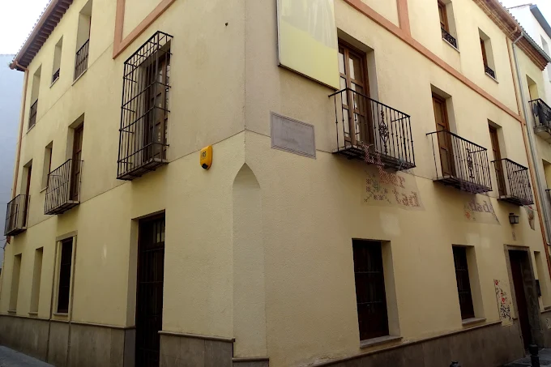
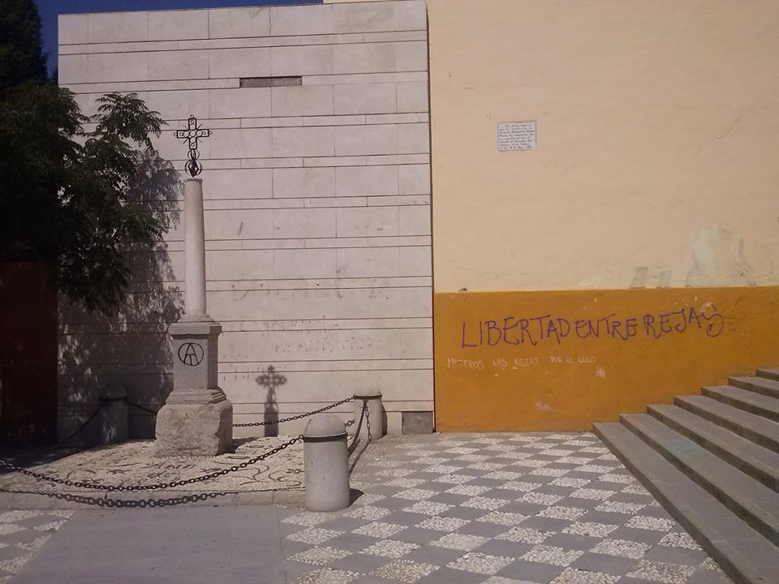
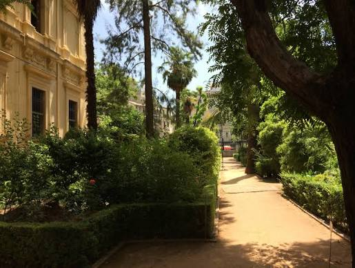

Esta casa, en la calle Águila nº 19, fue la última residencia de Dª Mariana Pineda antes de ingresar en prisión y morir meses más tarde ajusticiada. El 26 de septiembre de 2001 se produce la adquisición por escritura de permuta de la Casa de Mariana Pineda por el Excmo. Ayuntamiento de Granada. Esta modesta casa, en la calle Águila nº 19, fue la última residencia de Dª Mariana Pineda antes de ingresar en prisión y morir meses más tarde ajusticiada.
leer mas...
Monumento a Mariana Pineda en el lugar en el que fue ejecutada (actual Plaza de la Libertad de Granada). La inscripción en el monumento reza así: «En 26 de mayo de 1831 fue sacrificada en este sitio destinado al suplicio de los criminales la joven doña Mariana Pineda porque anhelaba la libertad de su patria. El Ayuntamiento Constitucional y la Audiencia Territorial dispusieron en 1840 que en memoria de tan ilustre víctima se colocase en este lugar el Sagrado Signo de nuestra Santa Religion y que no se volviesen a hacer ejecuciones de justicia en el.»
leer mas...
El Jardín Botánico ha tenido la suerte de llegar hasta nosotros manteniendo en su trazado la estructura que tenía hace más de 150 años, una rareza que aumenta su valor científico y patrimonial. Su distribución nos enseña como se pensaban este tipo de jardines por los botánicos del siglo XIX. Se conservan además algunos árboles de sus primeros años de existencia.
leer mas...